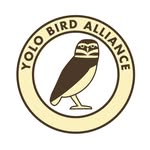
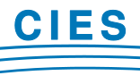
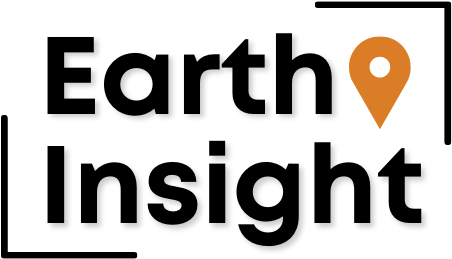
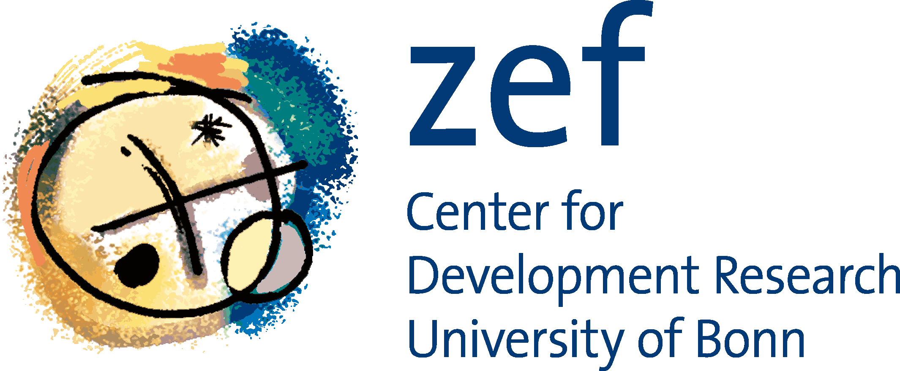

About
I am an Earth Scientist who develops spatial tools using Remote Sensing and GIS in an attempt to help solve global to local climate, water, and ecosystem crises. Throughout my career I have worked in a variety of applied research settings on projects related to conservation, water resource planning and management, ecohydrology studies (forests and wetlands), national forest fire monitoring, fossil fuel industry impact studies, renewable energy zone planning, and climate change adaptation. I strongly support the development of open spatial data and tools. Most recently I have developed a suite of tools in support of bird conservation and research.
Experience
Founder. Not-for-profit research consultancy performing independent research in support of environmental conservation and thriving communities. Customized spatial analysis and remote sensing studies in support of conservation and adaptation planning.

Board Member and Conservation Co-chair. Field trip leader and compiler for the annual Putah Creek Christmas Bird Count.

Board Member.

Co-founder / Science and Research Director. Led a team of spatial analysts in data collection, analysis, mapping, and tool development communicating threats posed by extractive industries to ecosystems and communities. Skills: Python, QGIS, GIS, conservation.
CIM Integrated Remote Sensing Expert. Development and implementation of Mexico’s national satellite-based near-real-time forest fire detection program (MODIS/AVHRR). Capacity building with Mexican and Central American partners. Mexico City.

Postdoctoral Researcher. Monitoring study evaluating biodrainage for agricultural drainage in the Khorezm region, Amu-Darya River Basin, Uzbekistan (UNESCO/Urgench).
Publications
Peer-reviewed articles
Schellekens, J., Scatena, F.N., Bruijnzeel, L.A. and Wickel, A.J. (1999). An application of the Gash and Rutter models of rainfall interception in a tropical maritime forest, eastern Puerto Rico. Journal of Hydrology, 225(3–4): 168–184.
Wickel, A.J., Jackson, T.J. and Wood, E.F. (2000). Multi-temporal monitoring of soil moisture with RADARSAT SAR during the 1997 Southern Great Plains Hydrology Experiment. International Journal of Remote Sensing, 22(8): 1571–1583.
Hurtt, G.C., Xiao, X., Keller, M., Palace, M., Asner, G., Braswell, R., Brondizio, E., Cardoso, M., Carvalho, C., Fearon, M., Guild, L., Hagen, S., Moore, B., Nobre, C., Sá, T., Schloss, A., Vourlitis, G. and Wickel, A.J. (2003). IKONOS imagery for the Large Scale Biosphere-Atmosphere Experiment in Amazonia (LBA). Remote Sensing of Environment, 88: 111–127.
Khamzina, A., Lamers, J.P.A., Wickel, A.J., Djumaniyazova, Y. and Martius, C. (2005). Evaluation of young and adult tree plantations for biodrainage management in the lower Amu Darya river region, Uzbekistan. ICID 21st European Regional Conference Proceedings, Frankfurt a. Oder, Germany.
De Badts, E., Lopez, G., Wickel, A.J., Cruz, I. and Jimenez, R. (2006). Índice de propagación de Incendios. Biodiversitas, 65.
Wickel, A.J., van de Giesen, N.C. and Sá, T.D.A. (2008). Stormflow dynamics of two headwater catchments in Eastern Amazonia, Brazil. Hydrological Processes, 22(17): 3285–3293.
Matthews, J.H., Aldous, A. and Wickel, A.J. (2009). Managing water in a shifting climate. Journal of the American Water Works Association, August 2009: 28–29.
Matthews, J.H. and Wickel, A.J. (2009). Embracing uncertainty in freshwater climate change adaptation: a natural history approach. Climate and Development, 1: 269–279. [DOI]
Matthews, J.H., Wickel, A.J. and Freeman, S. (2011). Converging streams in climate-relevant conservation: water, infrastructure, and institutions. PLOS Biology, 9(9): e1001159. [DOI]
Lata, L., Wickel, A.J., Galaitsi, S., Samper Hiraldo, A. and Bruci, E. (2017). First assessment of the impacts of climate change and development scenarios on the water resources of the Vjosa River, Albania. Albanian Journal of Agricultural Sciences, 2018.
Angarita, H., Wickel, A.J., Sieber, J., Delgado, J. and Purkey, D. (2018). Large-scale impacts of hydropower development and climate change on the Mompós Depression wetlands, Colombia. Hydrology and Earth System Sciences, 22: 2839–2865. [DOI]
Colditz, R.R., Troche Souza, C., Vazquez, B., Wickel, A.J. and Ressl, R.A. (2018). Analysis of optimal thresholds for identification of open water using MODIS-derived spectral indices for two coastal wetland systems in Mexico. Remote Sensing of Environment. [DOI]
Salinas-Rodríguez, S.A., Barrios-Ordóñez, J.E., Sánchez-Navarro, R. and Wickel, A.J. (2018). Environmental flows and water reserves: Principles, strategies and contributions to water and conservation policies in Mexico. River Research and Applications. [DOI]
Book chapters
Asbjornsen, H. and Wickel, A.J. (2009). Changing fire regimes in tropical montane cloud forests: a global synthesis. In: M. Cochrane (ed.), Fire Ecology of Tropical Ecosystems.
LeRoy, S.R., Friggens, M., Garfin, G., González Villela, R., Harvison, S., Hayhoe, K., Lite, S.J., Montero Martínez, M.J., Nielsen-Gammon, J., Renfrow, J., Rissik, D., Santana Sepúlveda, J.S., Wickel, A.J. and Briggs, M. (2020). Adapting your stream restoration project to climate change. In: Renewing Our Rivers: A Guidebook to Dryland Stream Corridor Restoration. University of Arizona Press.
Reports
Earth Insight/SkyTruth (2024). Coral Triangle at Risk: Fossil Fuel Threats & Impacts. 8 pp.
Earth Insight (2024). Closing Window of Opportunity: Mapping Threats to Important Areas for Conservation in the Pantropics. Developed with WCPA, IUCN, Campaign for Nature, Wild Heritage, IIFB and OneEarth. 21 pp.
Earth Insight, Auriga Nusantara, Forest Watch Indonesia, Solutions for Our Climate, Trend Asia and Mighty Earth (2024). Unheeded Warnings: Forest Biomass Threats to Tropical Forests in Indonesia and Southeast Asia. 41 pp.
Earth Insight et al. (2024). Anything But Natural: Liquefied Natural Gas (LNG) Infrastructure Expansion Threats to Coastal & Marine Ecosystems. Developed with Say No to LNG, CEED Philippines, Friends of the Earth, and partners. 48 pp.
Earth Insight, Leave it in the Ground Initiative (LINGO) and IUCN WCPA (2023). Losing Ground: Fossil Fuel Extraction Threats to Protected Areas Around the World. 50 pp.
Earth Insight (2023). Three Basins Report: Fossil Fuel, Mining, and Industrial Expansion Threats to Forests and Communities. 48 pp.
Rainforest Foundation UK & Earth Insight (2022). Congo in the Crosshairs: Oil and Gas Expansion Threats to Forests and Communities. 29 pp.
Earth Insight (2022). Crisis Point: Oil and Gas Expansion Threats to Amazon and Congo Basin Tropical Forests and Communities. 41 pp.
Wickel, A.J., Fernandez, J., Escobar, M. and Escalera, A.C. (2020). Hydro-ecological monitoring and modeling of high-elevation wetlands of the Katari watershed, Bolivia. IDB Technical Report. 67 pp.
Wickel, A.J., Fernandez, J., Escobar, M., Balderama, M., Mautner, M., Devisscher, T., Maillard, O., Anivarro, R., Guzman Rojo, M.X., Rogers, B. and Newcomer, M. (2020). Fire and Water: A Regional Analysis of Chiquitania, Bolivia. SEI Technical Report for Bolivia WATCH. 64 pp.
Diaz-Chavez, R., Wickel, A.J., Joyce, B., Saalu, F. and Apondo, W. (2020). An assessment of water resources in conservancies in Isiolo, Marsabit, Samburu and Laikipia counties. SEI Energy Access Report, IMARA Programme, Kenya.
Wickel, A.J. and Newman, A.J. (2020). GMET validation Bolivia WATCH: Tupiza region. Technical Brief, SEI. 9 pp.
USAID/Sustainable Water Partnership (2019). Environmental Flows: Ensuring Water Security Through Preservation of Natural Flows. Technical guidance document. 37 pp.
WWF (2017). Natural & Nature-based Flood Management: A Green Guide. OFDA/USAID. 216 pp.
UNDP (2017). Assessment of Hydro-ecological and Socio-economic Systems of the Vjosa River. EU Flood Protection Infrastructure Project – FPIP, UNDP Albania. 114 pp.
WWF Greater Mekong Programme. Flowing Forward — Ecosystems in the Greater Mekong: Past Trends, Current Status, Possible Futures. (Co-led hydrospatial mapping.)
Theses
Wickel, A.J. (2004). Water and nutrient dynamics of a humid tropical agricultural watershed in Eastern Amazonia. PhD Thesis, Ecology and Development Series No. 21, Center for Development Research (ZEF), University of Bonn. 132 pp.
Wickel, A.J. (1998). RADARSAT observations during SGP97: potential for soil moisture mapping. MSc Thesis, Vrije Universiteit Amsterdam. 55 pp.